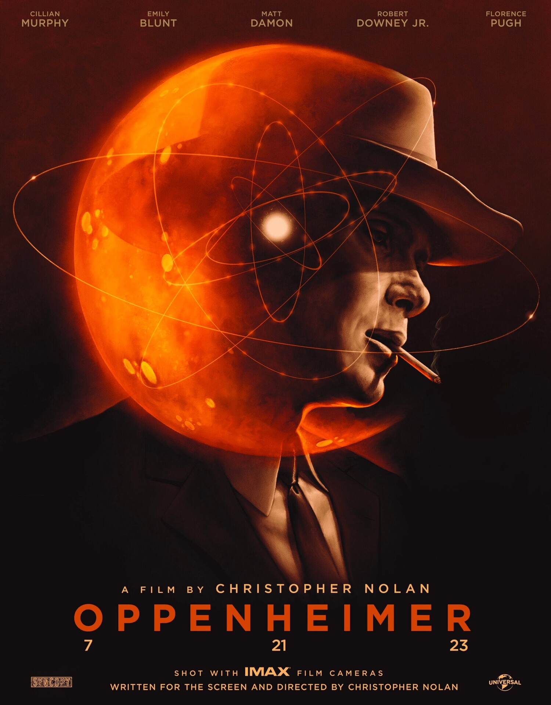

Острые козырьки
Британский сериал о криминальном мире Бирмингема 20-х годов прошлого века, в котором многолюдная семья Шелби стала одной из самых жестоких и влиятельных гангстерских банд послевоенного времени. Фирменным знаком группировки, промышлявшей грабежами и азартными играми, стали зашитые в козырьки лезвия. 1
Кинопоиск

Опенгеймер
История жизни американского физика Роберта Оппенгеймера, который стоял во главе первых разработок ядерного оружия.
Кинопоиск